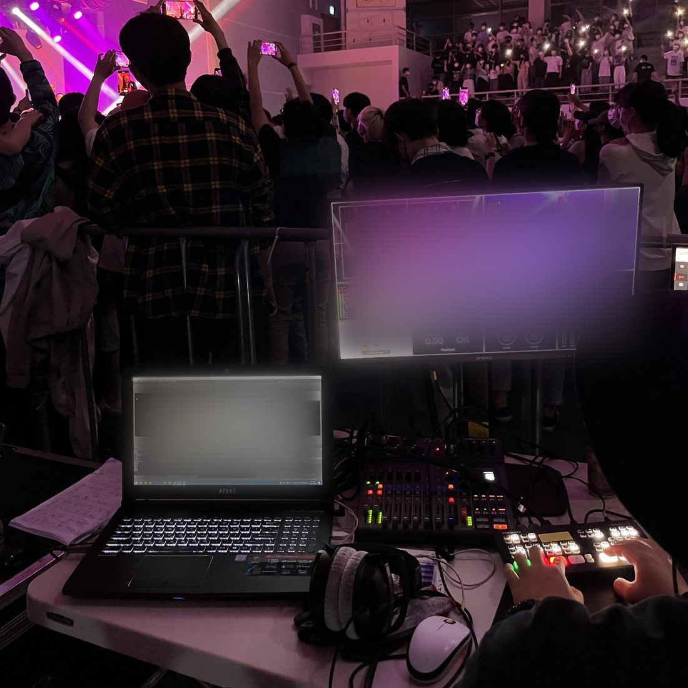
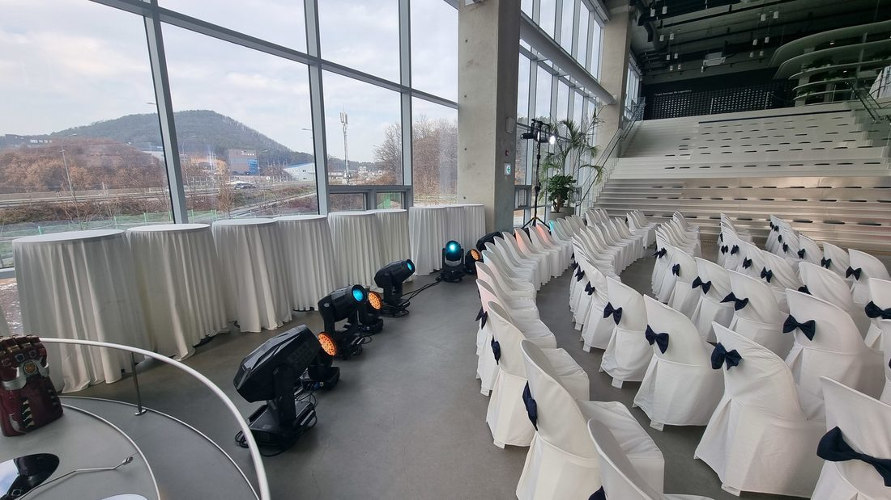

행사 음향 시스템
스피커와 콘솔, 무선 마이크를 행사장 크기와 객석 배치에 맞춰 구성하고, 음향 오퍼레이터가 리허설부터 행사 끝까지 콘솔을 지킵니다.
- 잘 맞는 행사
- 기념식·시상식, 포럼·컨퍼런스, 체육대회·실내 행사, 축제 무대
- 운영 방식
- 공간 크기와 전기 용량을 확인한 뒤 장비 구성
- 사회자·발표자·공연팀 마이크를 따로 세고 여분 준비
- 리허설과 행사 진행 내내 오퍼레이터 상주
메이커팀 › 무대 시스템
음향, 조명, LED, 무대와 트러스까지 행사장 크기와 전기 사정에 맞춰 구성하고, 설치부터 리허설, 행사 운영, 철수까지 메이커팀이 맡습니다.
스피커와 콘솔, 무선 마이크를 행사장 크기와 객석 배치에 맞춰 구성하고, 음향 오퍼레이터가 리허설부터 행사 끝까지 콘솔을 지킵니다.

단상과 무대, LED와 조명을 거는 트러스 구조물을 행사장 동선에 맞춰 세우고 철수까지 마칩니다.

LED 스크린과 프로젝터, 대형 모니터 중 공간 밝기와 크기에 맞는 화면을 고르고, 발표 자료와 영상 송출을 현장에서 운영합니다.

무대 조명과 무빙 라이트로 입장, 시상, 공연 순서마다 장면을 바꿔 행사 분위기를 만듭니다.

야외 축제와 공연 무대에 필요한 음향, 조명, LED, 트러스를 한 번에 구성하고, 바람과 비에 대비한 고정·철수 기준까지 정해 운영합니다.
필요한 것만 골라 맡기셔도 됩니다.
준비 방법은 행사 무대·음향 준비 체크리스트에서 볼 수 있습니다.